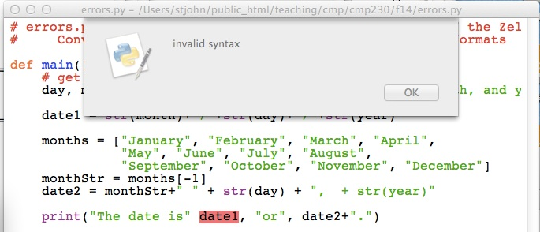

Laboratory Exercise 9
CSCI 127: Introduction to Computer Science
Hunter College, City University of New York
Spring 2025
Learning Objectives:
- Students will write programs that map GIS data using Turtles.
- Students will write programs that map GIS data using Plotly.
- Students will incorporate data files into their maps and plots.
- Students will explore finding errors (i.e. debugging).
- Students will assess code quality using standard tools (pylint at the commant line).
Software tools needed: terminal (command line), web browser and Python programming environment with numpy and matplotlib packages installed.
1. World Maps with Turtles
We are going to use Python to make maps. Let's start by mapping cities of the world. Locations in the world are usually indicated by their longitude and latitude.
- Longitude measures the number of degrees east or west of the prime meridian. When written as a number, it ranges from -180 to +180.
- Latitude measures the number of degrees north or south of the equator. When written as a number, it ranges from -90 (the south pole) to +90 (the north pole).
In the trinket below, map the following cities (GIS coordinates are rounded to the nearest whole number):
- New York City (longitude: -74, latitude: 41),
- Los Angeles (longitude: -118, latitude: 34),
- Paris, France (longitude: 2, latitude:49),
- Tokyo, Japan (longitude: 140, latitude: 35), and
- Rio de Janeiro, Brazil (longitude: -43, latitude: -23) .
2. Using Plotly
UPDATE TO PLOTLY
Folium is a Python package that uses the javascript Leaflet.js library to make interactive maps. Instead of popping up a matplotlib window, folium creates an .html file that you can open (and view interactively) with a browser. After the program runs, open the corresponding .html file in a web browser to see your map.
(Folium is installed on the lab machines, To check to see if your home machine has it, type at the Python prompt:
import folium
If you get an error, go to the terminal, and download it:
pip install foliumOur First Map
To make a map in folium, the process is:
- Write a program in Python, using folium.
- Run the program, which outputs an .html file.
- Open the .html file in a browser.
Here's our first program:
#Import the folium package for making maps
import folium
#Create a map, centered (0,0), and zoomed out a bit:
mapWorld = folium.Map(location=[0, 0],zoom_start=3)
#Save the map:
mapWorld.save(outfile='tempMap.html')Save this file and run it. It will create a file called tempMap.html. Open your favorite browser (Chrome, Firefox, IE, etc.) and choose "Open File" and then choose the file tempMap.html. You should see a map of the world.
Map of New York City
Let's make another map, focused on New York City. To do that, when we set up the map object, we need to reset the location to New York City and the increase the zoom level:
import folium
mapCUNY = folium.Map(location=[40.75, -74.125], zoom_start=10)Let's add in a marker for Hunter College:
folium.Marker(location = [40.768731, -73.964915], popup = "Hunter College").add_to(mapCUNY)
and create the .html file:
mapCUNY.save(outfile='nycMap.html')3. Plotting from Files
We can combine the mapping of folium with the tools we have used for CSV files.
Let's make an interactive map of the CUNY campuses. We can download a CSV file from data.ny.gov:
(Export as a .csv file and save in the same directory as your programs.) Open the file to make sure you have all the lines (should be 23) and to check if the column headings occur in the first row (they do, so no need to skip rows when reading in the file).Let's use Pandas to read in the file. We will need to import pandas and folium:
import folium import pandas as pd
To read in the CSV file, we'll use pandas' CSV reader. We'll print out the campus locations to make sure that all were read in:
cuny = pd.read_csv('cunyLocations.csv')
print(cuny["Campus"])Next, let's set up a map, centered on Hunter College:
mapCUNY = folium.Map(location=[40.768731, -73.964915])We need to add markers for each campus. We're going to iterate through the rows of dataframe to create the markers:
for index,row in cuny.iterrows():
lat = row["Latitude"]
lon = row["Longitude"]
name = row["Campus"]
newMarker = folium.Marker([lat, lon], popup=name)
newMarker.add_to(mapCUNY)Lastly, let's save our map:
mapCUNY.save(outfile='cunyLocations.html')
To view your map, open a browser. From the browser, open the file: cunyLocations.html.
4. Finding Errors
Finding, and fixing errors, in your programs is a very useful skill. Let's look at a program with lots of errors and work through how to identify the issues and fix them. If you cloned the repo above, you will have a copy of errors.py on your computer (you can also download from the webpage). When loaded into IDLE, it does not run:# errors.py is based on dateconvert2.py from Chapter 5 of the Zelle textbook
# Converts day month and year numbers into two date formats
def main()
# get the day month and year
day, month year = eval(input("Please enter day, month, and year numbers: ")
date1 = str(month)"/"+str(day)+"/"+str(year)
months = ["January", "February", "March", "April",
"May", "June", "July", "August",
"September", "October", "November", "December"]
monthStr = months[-1]
date2 = monthStr+" " + str(day) + ", + str(year)
print("The date is" date1, "or", date2+".")
main()
The red line indicates where the intepreter has found an error. Can you tell what it is? Syntax is another word for grammar, so, it most likely missing `punctuation' or a misspelling of some sort. We have spelled def correctly and have the right number of parenthesis, so, what else is missing?
The answer is after the parenthesis on a function definition, a colon is required. Add that in:
def main():Again, we get a dialog box:

Instead of the whole line being highlighted, only the word year is. The Python intepreter was not expecting year and says there is a grammatical mistake. Since year does not include any grammatical constructs, we need to look before the message to see where the error is.
Do you see it?
The answer is lists of variables need commas in between them to distinguish one from the next. Add the comma in:
day, month, year = ...
Once more we get a dialog box:
It has highlighted the first item, date1 on the line. That is a name and looks fine. So, as above, let's look before the highlighted error to see if there's a problem. The line above it is:
day, month, year = eval(input("Please enter day, month, and year numbers: ")The answer is we are missing a closing parenthesis. The line has two left parenthesis but only one right parenthesis. Add the right parenthesis in:
... and year numbers: "))
Again, we get a dialog box:

The intepreter does not understand the second " on the line. Why? What is this line doing? It's constructing a string and storing it in the variable date1. How do you build a string out of smaller strings?
The answer is to put smaller strings together (called concatenation) we need to use the plus sign (+). The line is missing a plus sign right before the quotes. Add the plus sign in:
date1 = str(month) + "/" ...
Again, we get a dialog box, but this one has a different message:

EOL means "End of the line", so, the message says that the end of the line was reached before you finished defining the string. How can you fix this?
The answer is to end the string, using quotation marks. The line is missing a quotation mark at the very end. Add the quotation mark :
...+ ", + str(year)"
Our familiar dialog box returns:

We have seen this type of error before. How do you fix it?
The answer is lists of arguments need commas in between them to distinguish one from the next. Add the comma in:
... date is", date1 ...It runs! Now let's make sure it works. Type in at the prompt:
Please enter day, month, and year numbers: 31, 12, 2014Traceback (most recent call last): File "/Users/stjohn/public_html/teaching/cmp/cmp230/f14/errors.py", line 18, inmain() File "/Users/stjohn/public_html/teaching/cmp/cmp230/f14/errors.py", line 13, in main monthStr = months[month+1] IndexError: list index out of range
When you see messages like this, go to the very last line:
IndexError: list index out of rangeIt says that the index for our list is out of range. An index is the item of the list that we're accessing. For example, months[1] has index 1 and will give us February. The range of the index for a list is 0 to one less than the length of the list. In the case of months, the range is [0,1,2,...,11]. What went wrong when we entered 12 for our month?
The answer is we used month+1 = 12 + 1 = 13 as the index:
monthStr = months[month+1] monthStr = months[month-1]It still runs, but does it work? Let's try the same input again:
Please enter day, month, and year numbers: 31, 12, 2014
The date is 12/31/14 or December 31, + str(year).Something odd is happening at the end-- str(year) does not look right. Let's look at the print statement:
date2 = monthStr+" " + str(day) + ", + str(year)"date2 = monthStr+" " + str(day) + "," + str(year)Success! But try a few other inputs, just to make sure. It is always good to try cases that are near the `boundary' of what's allowed, since those are the places we are most likely to make mistakes:
Please enter day, month, and year numbers: 1,1,2015
The date is 1/1/2015 or January 1,2015.
Please enter day, month, and year numbers: 1, 2, 2003
The date is 2/1/03 or February 1,2003.
Please enter day, month, and year numbers: 4, 7, 1976
The date is 7/4/1976 or July 4,1976.We have removed all the errors, and the program now runs correctly!
4. Pylint from the Command Line
What's Next?
You can start working on this week's programming assignments. The Programming Problem List has problem descriptions, suggested reading, and due dates next to each problem. You should aim to finish the programs in the next week, although the deadlines are several weeks out, to give a buffer just in case.